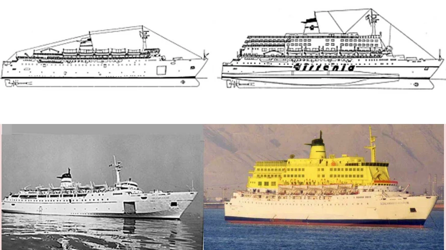
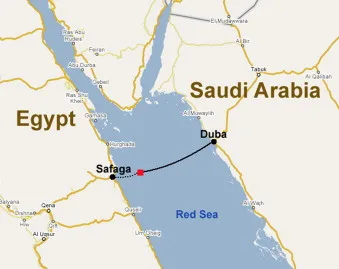

خمسون عامًا من تاريخ السفينة، وليلة الغرق، ومسيرة العائلات الطويلة نحو العدالة.
1969 إلى 1970
بناء العبّارة «بوكاتشو» في إيطاليا
بنتها شركة إيتالكانتييري في كاستيلاماري دي ستابيا لصالح شركة تيرينيا الإيطالية الحكومية للملاحة. عبّارة بطول 130 مترًا، واحدة من خمس سفن شقيقة عُرفت في إيطاليا باسم «الشعراء». حتى عام 1999 أبحرت أساسًا بين البر الإيطالي وجزيرة سردينيا.
1990 إلى 1991
إضافة أربعة طوابق
لزيادة عدد الركاب، أُعيد بناء «بوكاتشو» وشقيقاتها كاردوتشي ومانزوني وباسكولي وبتراركا بإضافة أربعة طوابق علوية وعوامات جانبية. ووفقًا لخبراء العائلات الفنيين، فإن هذا التعديل هو أصل المأساة.

أبريل 1999
بيعها إلى مصر تحت علم بنما
باعت تيرينيا السفينة بنحو مليوني دولار لشركة باسيفيك صن لايت مارين البنمية المملوكة لعائلة إسماعيل المصرية. أصبح اسمها «السلام بوكاتشو 98» وأبحرت في البحر الأحمر والبحر المتوسط.
2002
غرق سفينة شقيقة بعد حريق
اشتعلت النيران في «السلام بتراركا 90» المعدّلة بالطريقة نفسها، فمالت وغرقت أثناء قطرها خارج ميناء ضبا في السعودية. توفي بحّار وأصيب عشرة آخرون. كان ذلك إنذارًا لم يلتفت إليه أحد.
2 فبراير 2006، الساعة 19:51
الإبحار من ضبا
غادرت «السلام بوكاتشو 98» ميناء ضبا في السعودية متجهة إلى سفاجا في مصر، وعلى متنها أكثر من 1400 راكب وفرد طاقم وعشرات المركبات.

ليلة 2 إلى 3 فبراير 2006
حريق ومياه في مرآب السيارات ثم الغرق
اندلع حريق على متن السفينة. لم تتمكن مياه البحر المستخدمة في إطفائه من التصريف خارج المرآب لأن فتحات التصريف كانت مسدودة. ومع الرياح مالت السفينة إلى الجانب الأيمن. في الساعة 23:33 بالتوقيت العالمي غرقت على عمق 900 متر. نجا 364 راكبًا و24 فردًا من الطاقم فقط، ويُعتقد أن أكثر من 700 ضحية ما زالوا داخل الحطام.
في مارس 2009 حكمت محكمة استئناف الغردقة على مالك السفينة ممدوح إسماعيل ومسؤولين آخرين بالسجن حتى سبع سنوات بتهمة القتل الخطأ المتعدد. تناولت المحاكمات ما حدث بعد الغرق فقط، لا سلامة السفينة.
يناير 2011
العائلات تقاضي RINA في جنوة
رفعت عائلات الضحايا والناجون دعوى مدنية أمام محكمة جنوة حيث مقر RINA. عُقدت الجلسة الأولى في يناير 2011.
2012 إلى 2014
التعطيل بحجة «الحصانة السيادية»
احتجت RINA بأنها تصرفت نيابة عن بنما ولا يجوز محاكمتها إلا هناك. أيدتها محكمة جنوة عام 2012 ثم محكمة الاستئناف عام 2014، فتوقفت القضية لسنوات.
مايو وديسمبر 2020
حكمان تاريخيان لصالح العائلات
رفضت محكمة العدل الأوروبية في مايو، ثم الدوائر المجتمعة لمحكمة النقض الإيطالية في ديسمبر، الدفع بالحصانة السيادية. ووصفت المحكمة العليا حقوق الإنسان بأنها «محور» النظام القانوني الإيطالي. وبات بإمكان القضية العودة إلى جنوة.